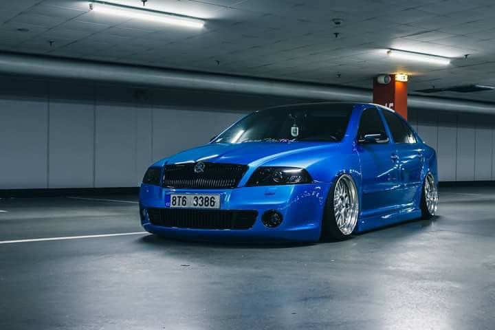

Az autóstalálkozókról
Az autóstalálkozók a járművek szerelmeseinek legnagyobb ünnepei, ahol a veterán gépcsodák, tuningolt sportautók és ritka modellek egyaránt megcsodálhatók. Ezek az események nemcsak a gépekről szólnak, hanem a közösségről, a szenvedélyről és a benzingőz illatáról is.
A rendezvényeken sokféle program várja a látogatókat: bemutatók, versenyek, szabadtéri kiállítások és közösségi beszélgetések. A résztvevők megoszthatják tapasztalataikat, és új ötleteket kaphatnak autóik továbbfejlesztéséhez.
Sokszor a gyermekprogramok és gasztronómiai standok is színesítik a kínálatot, így a családok számára is kellemes kikapcsolódást nyújt egy ilyen nap.

Minden évben több városban is megrendezik ezeket az eseményeket, ahol a járművek rajongói összegyűlhetnek, és megoszthatják tapasztalataikat, ötleteiket, valamint inspirációt meríthetnek egymás alkotásaiból. A közösségi hangulat, a zene és a közös szenvedély teszi igazán emlékezetessé ezeket a találkozókat.
A rendezvények különböző kategóriái — például veterán, tuning, off-road vagy sportautó — lehetőséget adnak arra, hogy mindenki megtalálja a kedvére valót.